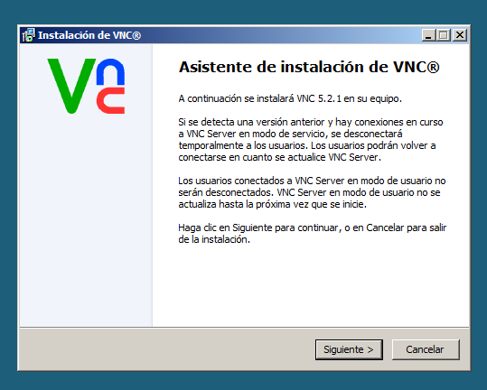
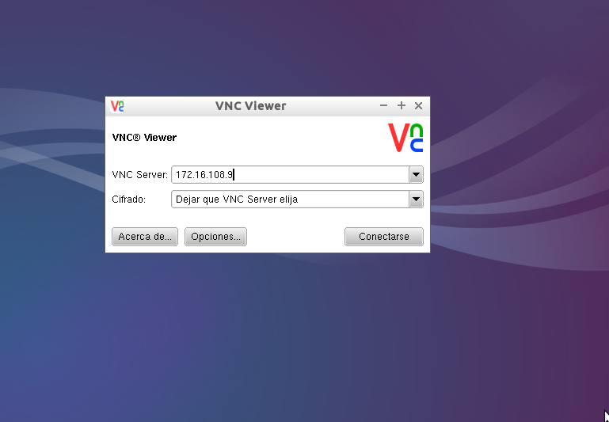
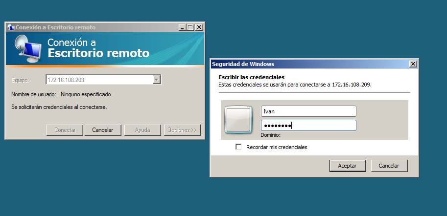
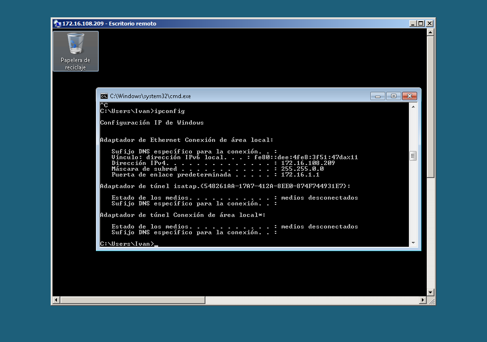
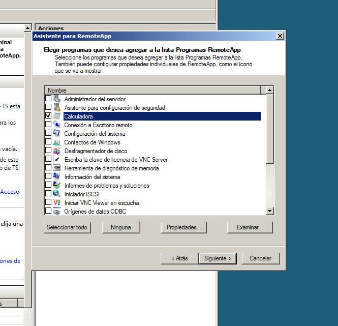
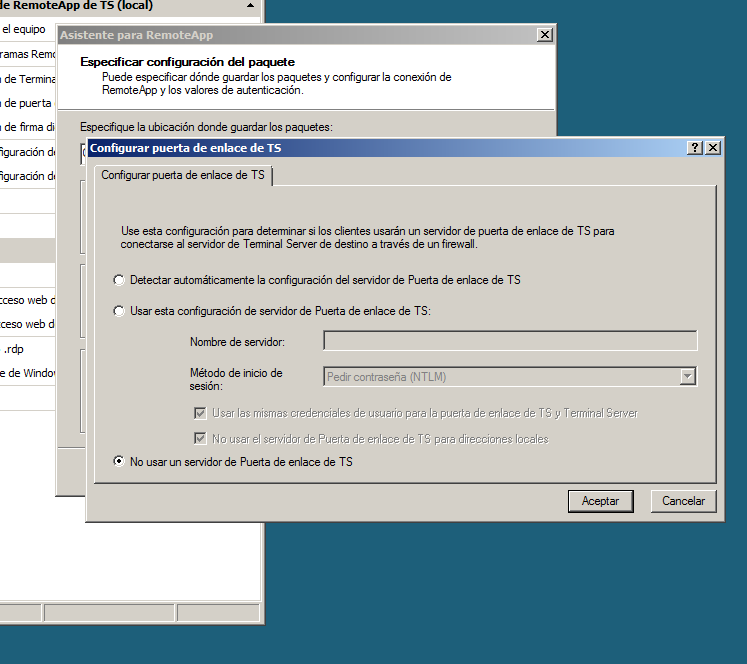

- Módulo: Administración de Sistemas Operativos
- Título del trabajo Acceso Remoto
- Componentes del grupo: Iván José Hernández Regalado
- Curso Académico: 2014/2015
- Fecha de entrega: 10 de Octubre de 2014
Descargamos desde la página web oficial el programa RealVNC y comenzamos su intalación.

Luego aplicamos una licencia que nos dan al registrarnos y estaría completa la instalación.
Ahora para conectarnos debemos ir a la MV cliente y tener instalado el RealVNC o desde un navegador también funciona. Desde el navegador debemos tener instalado el Java y solo tenemos que poner la dirección que nos dice el servidor. Con el RealVNC instalado en el cliente solo debemos ejecutar el programa RealVNC viewer y poner la dirección del servidor.
En Lubuntu debemos descargar los paquetes en instalarlos, el RealVNC Server para el servidor y el RealVNC Viewer para el cliente. Para conectarnos debemos poner la IP del servidor y el puerto.

Probamos la conexión Linux-Linux.
Para finalizar conectarnos a Linux desde Windows.
Primero debemos desactivar el firewall de ambos windows para que no den problemas con el programa por defecto de escritorios remotos.
Luego en las propiedades del equipo configuramos el Acceso remoto y permitimos la conexión.

Para conectarnos solo debemos ejecutar el programa y poner la IP del servidor desde la MV cliente y luego poner usuario y clave del servidor.

Ahora desde la MV Lubuntu cliente debemos instalar el programa remmina para conectarnos el servidor windows.
Una vez instalado solo debemos ejecutarlo y poner la IP del servidor, usuario y clave.
Para conectarnos al lubuntu servidor desde el cliente windows tenemos que instalar el paquete xrdp y luego usar el programa por defecto de windows poniendo la IP del servidor Lubuntu y allí configurar el xrdp con usuario y clave.
Lo primero que debemos hacer es añadir la función Terminal Services.
Luego creamos un usuario local y lo añadimos al grupo de Usuarios de escritorios remotos.
Para conectarnos debemos iniciar el programa por defecto de conexión de escritorios remotos y poner la IP del servidor y el usuario anteriormente creado.
Iniciamos desde herramientas administrativas el Administrador de RemoteApp de TS y vamos ha agregar un programa, por ejemplo la calculadora.

Luego tenemos que crearle un archivo .rdp para que cuando lo ejecutemos desde una máquina externa se conecte al servidor y nos pida su clave y contraseña para su uso.

Para finalizar nos llevamos el RemoteApp creado a una MV cliente y lo ejecutamos desde alli para comprobar que se nos abre correctamente.